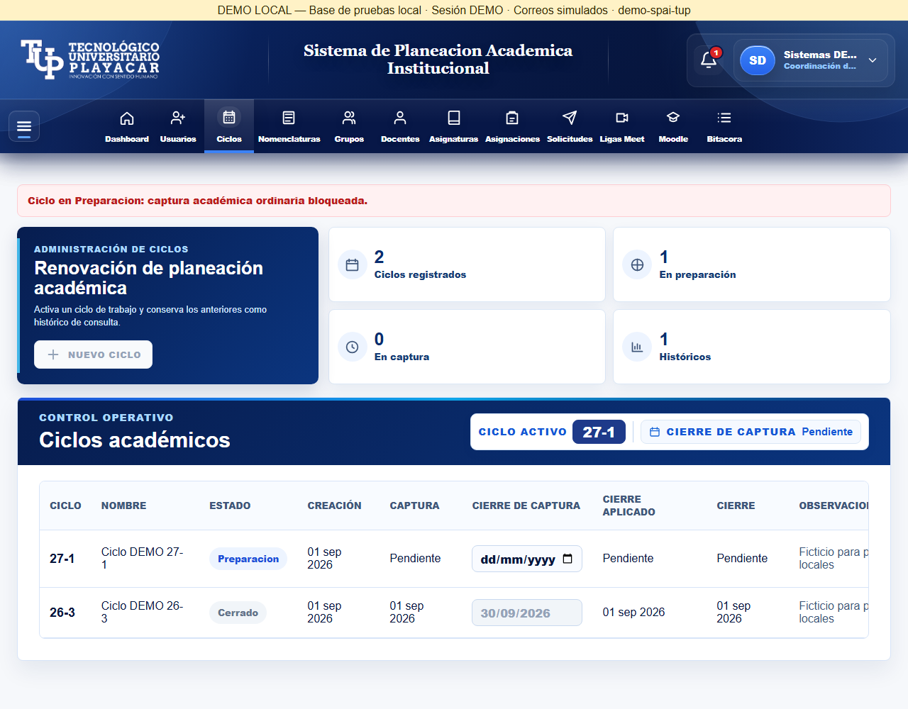
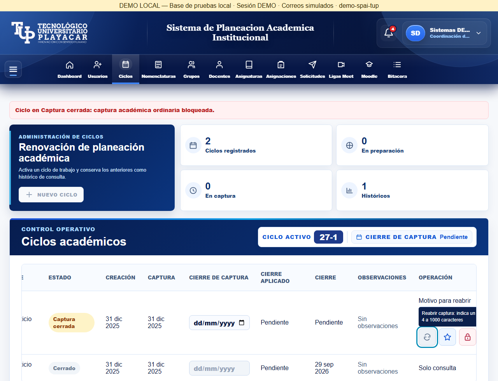
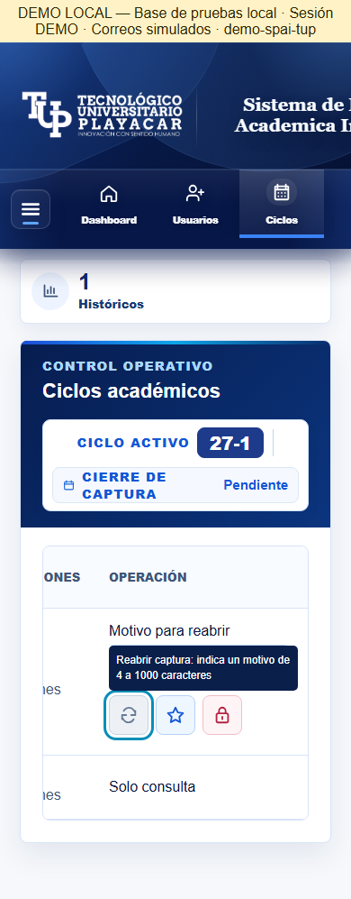
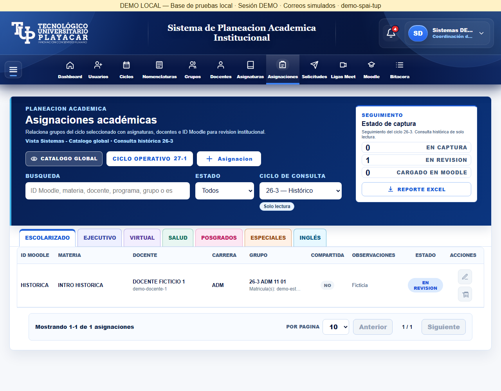
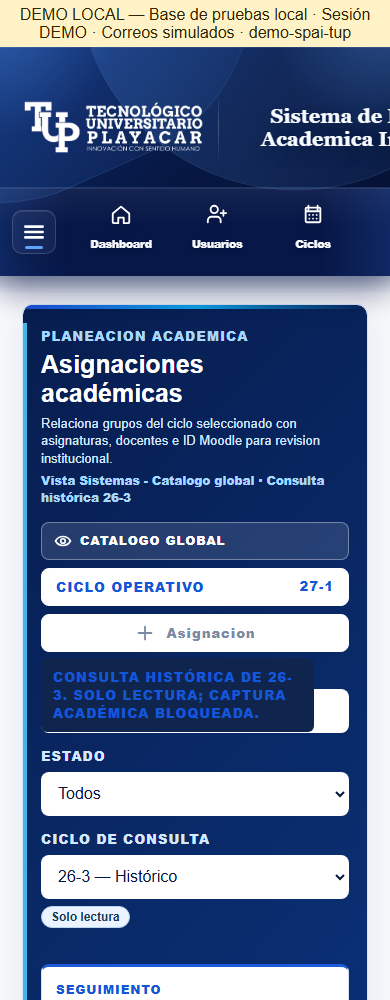
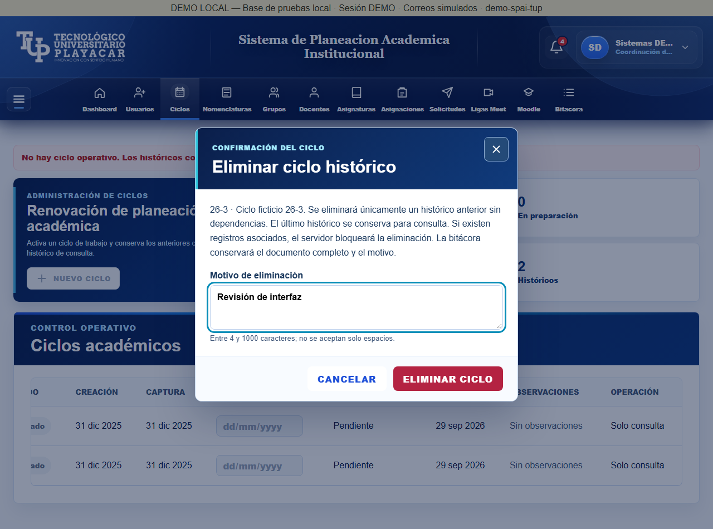

23 octubre 2026. No es aceptación humana. Gate: 56 contratos acreditados, 10 R03 abiertos y 6 R02 inconclusos; salida 1. Complemento de baja separado: 8 PASS, 2 inconclusos. Emuladores 28080 / frontend 4204; demo compartida preservada.
Matriz y guion · Registro del propietario · Resultados · Abrir entorno aislado





